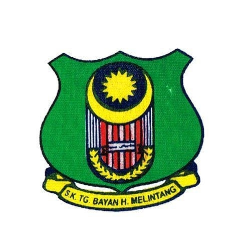
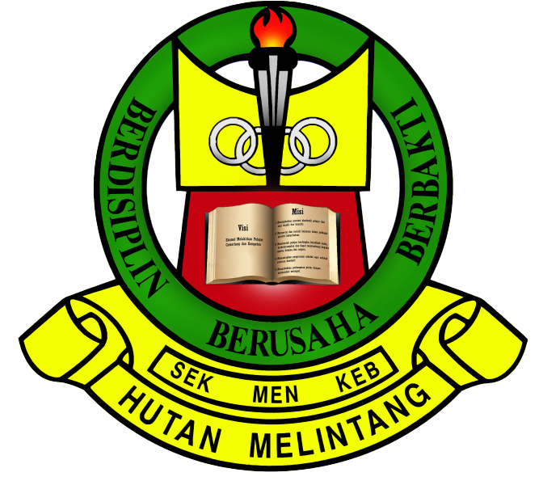

My Education
- SCHOOL

The logo of SKTB
- Sekolah Kebangsaan Tanjung Bayan (UPSR)
- From year one to year six, I attended sekolah kebangsaan tanjung bayan, which was my first school
I was involved in sports and was a member of the badminton school tier,
- Then, in 2013, I completed my UPSR with a score of 2A 3B.

The logo of SMK Hutan Melintang
- Sekolah Menengah Kebangsaan Hutan Melintang(SPM)
- I continued my secondary school education in SMK Hutan Melintang, Simpang Empat, Perak, from 2014 to 2018,.
I managed to finish my spm result with 3A 2B 1c 1D after 5 years of studying at this institution.
- UNIVERSITY - DIPLOMA
- UNIVERSITI TEKNOLOGI MARA

The logo of UITM
registration at UiTM Kedah
- Universiti Teknologi MARA (UiTM) Sungai Petani, Kedah (2019 - 2021)
- Following the completion of my SPM in 2018, I continued my studies at UiTM Kedah,
where I majored in the Diploma in Information Management degree.
- I am presently in my final semester of five semesters
- The pandemic CO-VID 19 had just begun while I was in the second semester,
and we were compelled to return home and finish our studies through online distance learning (ODL).